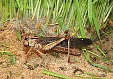
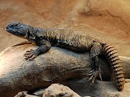
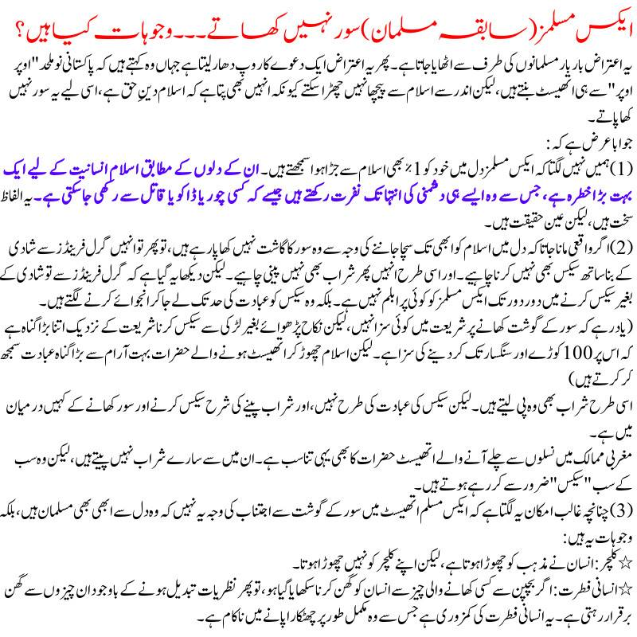

")
یہ اعتراض بار بار مسلمانوں کی طرف سے اٹھایا جاتا ہے۔ پھر یہ اعتراض ایک دعوے کا روپ دھار لیتا ہے جہاں وہ کہتے ہیں کہ پاکستانی نو ملحد "اوپر اوپر" سے ہی اتھیسٹ بنتے ہیں، لیکن اندر سے اسلام سے پیچھا نہیں چھڑا سکتے کیونکہ انہیں بھی پتا ہے کہ اسلام دینِ حق ہے، اسی لیے یہ سور نہیں کھا پاتے۔
جوابا عرض ہے کہ:
(1) ہمیں نہیں لگتا کہ ایکس مسلمز دل میں خود کو 1٪ بھی اسلام سے جڑا ہوا سمجھتے ہیں۔ ان کے دلوں کے مطابق اسلام انسانیت کے لیے ایک بہت بڑا خطرہ ہے، جس سے وہ ایسے ہی دشمنی کی انتہا تک نفرت رکھتے ہیں جیسے کہ کسی چور یا ڈاکو یا قاتل سے رکھی جا سکتی ہے۔ یہ الفاظ سخت ہیں، لیکن عین حقیقت ہیں۔
(2) اگر واقعی مانا جاتا کہ دل میں اسلام کو ابھی تک سچا جاننے کی وجہ سے وہ سور کا گاشت نہیں کھا پا رہے ہیں، تو پھر تو انہیں گرل فرینڈز سے شادی کے بنا ساتھ سیکس بھی نہیں کرنا چاہیے۔ اور اسی طرح انہیں پھر شراب بھی نہیں پینی چاہیے۔
لیکن دیکھا یہ گیا ہے کہ گرل فرینڈز سے تو شادی کے بغیر سیکس کرنے میں دور دور تک ایکس مسلمز کو کوئی پرابلم نہیں ہے۔ بلکہ وہ سیکس کو عبادت کی حد تک لے جا کر انجوائے کرنے لگتے ہیں۔
(یاد رہے کہ سور کے گوشت کھانے پر شریعت میں کوئی سزا نہیں، لیکن نکاح پڑھوائے بغیر لڑکی سے سیکس کرنا شریعت کے نزدیک اتنا بڑا گناہ ہے کہ اس پر 100 کوڑے اور سنگسار تک کر دینے کی سزا ہے۔ لیکن اسلام چھوڑ کر اتھیسٹ ہونے والے حضرات بہت آرام سے بڑا گناہ عبادت سمجھ کر کرتے ہیں)
اسی طرح شراب بھی وہ پی لیتے ہیں۔ لیکن سیکس کی عبادت کی طرح نہیں، اور شراب پینے کی شرح سیکس کرنے اور سور کھانے کے کہیں درمیان میں ہے۔
مغربی ممالک میں نسلوں سے چلے آنے والے اتھیسٹ حضرات کا بھی یہی تناسب ہے۔ ان میں سے سارے شراب نہیں پیتے ہیں، لیکن وہ سب کے سب "سیکس" ضرور سے کر رہے ہوتے ہیں۔
(3) چنانچہ غالب امکان یہ لگتا ہے کہ ایکس مسلم اتھیسٹ میں سور کے گوشت سے اجتناب کی وجہ یہ نہیں کہ وہ دل سے ابھی بھی مسلمان ہیں، بلکہ وجوہات یہ ہیں:
٭ کلچر: انسان نے مذہب کو چھوڑا ہوتا ہے، لیکن اپنے کلچر کو نہیں چھوڑا ہوتا۔
٭انسانی فطرت: اگر بچپن سے کسی کھانے والی چیز سے انسان کو گھن کرنا سکھایا گیا ہو، تو پھر نظریات تبدیل ہونے کے باوجود ان چیزوں سے گھن برقرار رہتی ہے۔ یہ انسانی فطرت کی کمزوری جس سے وہ مکمل طور پر چھٹکارا پانے میں ناکام ہے۔
بہرحال، مسلمانوں کو عقل کی یہ باتیں سمجھ نہیں آتیں، اور وہ ان کا انکار کر کے اپنے الزام پر ڈٹے رہتے ہیں۔ چنانچہ ایسے مسلمانوں کو دعوت ہے کہ وہ ذیل کے چیلنج قبول کر کے دکھائیں۔
پہلا چیلنج: تمام مسلمان ٹڈی کھا کر دکھائیں

شریعت کے مطابق ٹڈی حلال ہے۔
سنن ابن ماجہ(لنک):
3218- حَدَّثَنَا أَبُو مُصْعَبٍ، حَدَّثَنَا عَبْدُالرَّحْمَنِ بْنُ زَيْدِ بْنِ أَسْلَمَ عَنْ أَبِيهِ، عَنْ عَبْدِاللَّهِ بْنِ عُمَرَ؛ أَنَّ رَسُولَ اللَّهِ ﷺ قَالَ: " أُحِلَّتْ لَنَا مَيْتَتَانِ: الْحُوتُ وَالْجَرَادُ "۔ * تخريج: تفردبہ ابن ماجہ، (تحفۃ الأشراف: ۶۷۳۸، ومصباح الزجاجۃ: ۱۱۰۷)، وقد أخرجہ: حم (۲/۹۷) (صحیح)
ترجمہ:
عبداللہ بن عمر رضی اللہ عنہما سے روایت ہے کہ رسول اللہ صلی اللہ علیہ وسلم نے فرمایا: '' ہمارے لئے دو مردار: مچھلی اور ٹڈی حلال ہیں''۔
چیلنج یہ ہے کہ اب مسلمان بغیر گھن کے ٹڈی کھا کر دکھائیں۔ خاص طور پر خواتین کے حوالے سے یہ چیلنج بہت انٹرسٹنگ ہے۔
اور پھر اگر کچھ مسلمان ٹڈی کھاتے وقت گھن کا شکار ہوئے، تو کیا آپ ان مسلمانوں پر فتویٰ لگائیں کہ وہ ابھی تک دل سے مسلمان نہیں ہیں جو حلال اللہ سے گھن کھا رہے ہیں؟
دوسرا چیلنج: گوہ (عربی چھپکلی کو کھا کر دکھائیں)
٭ عربی سلفی حضرات گوہ (صحرائی چھپکلی) کھاتے ہیں اور انتہائی شوق و ذوق سے کھاتے ہیں ۔ پاکستانی سلفی حضرات اسے حلال مانتے ہوئے بھی کھانے کی ہمت نہیں کر پاتے ہیں اور ابکائی محسوس کر رہے ہوتے ہیں۔ اب پاکستانی سلفی حضرات کے متعلق یہ نہیں کہا جا سکتا کہ وہ دل سے سلفی نہیں ہیں، بلکہ اندر سے ابھی تک وہ مقلد بریلوی یا مقلد دیوبندی ہیں۔
٭ خود پیغمبر نے حلال ہونے کے باوجود گوہ نہ کھائی کیونکہ وہ انکے علاقے میں نہیں ہوتی تھی اور اس وجہ سے وہ اسے کھاتے ہوئے گھن کھا گئے۔
سنن ترمذی، باب الضب (لنک):
3241- حَدَّثَنَا مُحَمَّدُ بْنُ الْمُصَفَّى، الْحِمْصِيُّ حَدَّثَنَا مُحَمَّدُ بْنُ حَرْبٍ،حَدَّثَنَا مُحَمَّدُ بْنُ الْوَلِيدِ الزُّبَيْدِيُّ، عَنِ الزُّهْرِيِّ، عَنْ أَبِي أُمَامَةَ بْنِ سَهْلِ بْنِ حُنَيْفٍ، عَنْ عَبْدِاللَّهِ بْنِ عَبَّاسٍ،عَنْ خَالِدِ بْنِ الْوَلِيدِ أَنَّ رَسُولَ اللَّهِ ﷺ " أُتِيَ بِضَبٍّ مَشْوِيٍّ، فَقُرِّبَ إِلَيْهِ، فَأَهْوَى بِيَدِهِ لِيَأْكُلَ مِنْهُ،فَقَالَ لَهُ مَنْ حَضَرَهُ: يَا رَسُولَ اللَّهِ ! إِنَّهُ لَحْمُ ضَبٍّ، فَرَفَعَ يَدَهُ عَنْهُ، فَقَالَ لَهُ خَالِدٌ: يَارَسُولَ اللَّهِ ! أَحَرَامٌ الضَّبُّ ؟ قَالَ: لا،وَلَكِنَّهُ لَمْ يَكُنْ بِأَرْضِي فَأَجِدُنِي أَعَافُهُ " قَالَ: فَأَهْوَى خَالِدٌ إِلَى الضَّبِّ، فَأَكَلَ مِنْهُ، وَرَسُولُ اللَّهِ ﷺ يَنْظُرُ إِلَيْهِ۔(حکم: صحیح)
ترجمہ:
۳۲۴۱- خالد بن ولید سے روایت ہے کہ رسول اللہ کی خدمت میں ایک بھنی ہوئی ضب( گوہ) لائی گئی، اور آپ کو پیش کی گئی تو آپ نے کھانے کے لئے اس کی طرف اپنا ہاتھ بڑھایا، تو وہاں موجودایک شخص نے عرض کیا: اللہ کے رسول ! یہ ضب( گوہ) کا گوشت ہے ( یہ سن کر ) آپ نے اس سے اپنا ہاتھ کھینچ لیا، خالد نے آپ سے عرض کیا: اللہ کے رسول ! کیا ضب(گوہ) حرام ہے ؟ آپ نے فرمایا: '' نہیں ، لیکن وہ میرے علاقہ میں نہیں ہوتی اس لئے میں اس سے گھِن محسوس کرتا ہوں'' ، ( یہ سن کر ) خالد نے ضب( گوہ) کی طرف ہاتھ بڑھا کر اس کو کھایا ، اور رسول اللہ صلی اللہ علیہ وسلم انہیں دیکھ رہے تھے
سلفی محدثین نے اس روایت پر "صحیح" کا حکم لگایا ہے۔
(نوٹ: رسول کے نہ کھانے کی ایک وجہ اور بتلائی گئی کہ یہ گوہ پچھلی قوم تھی جو مسخ ہو گئی۔ لیکن پھر اللہ نے رسول کو بتلا دیا کہ وہ قوم 3 دن بعد مر گئی تھی (یعنی گوہ کا اس مسخ شدہ قوم سے تعلق نہیں)۔ لیکن پھر بھی پیغمبر نے گھن کی وجہ سے گوہ نہیں کھائی۔ تفصیلات اوپر والے لنک میں)
تیسرا چیلنج: لکڑ بگھا کھا کر دکھائیے
یہ لکڑ بگھا ہے (جو کتے سے بڑا اور زیادہ مضبوط ہے اور جو مردار کھاتا ہے) جسے صحابہ کھاتے تھے اور پیغمبر نے اسے صحیح ح
دیث کے مطابق حلال کہا۔
سنن ابن ماجہ (لنک):
3236- حَدَّثَنَا هِشَامُ بْنُ عَمَّارٍ، وَمُحَمَّدُ بْنُ الصَّبَّاحِ، قَالا: حَدَّثَنَا عَبْدُاللَّهِ بْنُ رَجَائٍ الْمَكِّيُّ،عَنْ إِسْمَاعِيلَ بْنِ أُمَيَّةَ، عَنْ عَبْدِاللَّهِ بْنِ عُبَيْدِ بْنِ عُمَيْرٍ ، عَنِ ابْنِ أَبِي عَمَّارٍ (وَهُوَ عَبْدُ الرَّحْمَنِ) قَالَ: سَأَلْتُ جَابِرَ بْنَ عَبْدِاللَّهِ عَنِ الضَّبُعِ، أَصَيْدٌ هُوَ؟ قَالَ: نَعَمْ، قُلْتُ: آكُلُهَا؟ قَالَ: نَعَمْ، قُلْتُ: أَشَيْئٌ سَمِعْتَ مِنْ رَسُولِ اللَّهِ_ ﷺ؟ قَالَ: نَعَمْ۔ * تخريج: د/الأطعمۃ ۳۲ (۳۸۰۱)، ت/الحج ۲۸ (۸۵۱)، الأطعمۃ ۴ (۱۷۹۲)، ن/الحج ۸۹ (۲۸۳۹)، الصید ۲۷ (۴۳۲۸)، (تحفۃ الأشراف: ۲۳۸۱)، وقد أخرجہ: حم (۳/۲۹۷، ۳۱۸)، دي/المناسک۹۰ (۱۹۸۴) (صحیح)
ترجمہ:
۳۲۳۶- عبد الرحمن بن ابی عمار کہتے ہیں کہ میں نے جابربن عبداللہ رضی اللہ عنہما سے ضبع( لکڑبگھا) کے متعلق سوال کیا ، کیا وہ شکار ہے ؟ انہوں نے کہا: ہاں ، میں نے عرض کیا: کیا میں اسے کھاؤں ؟ کہا: ہاں، پھر میں نے عرض کیا: کیاآپ نے ( اس سلسلے میں ) رسول اللہ صلی اللہ علیہ وسلم سے کچھ سنا ہے ؟ انہوں نے جواب دیا :ہاں ۔
اس روایت پر بھی سلفی محدثنین نے "صحیح" کا حکم لگایا ہے۔
لکڑ بگھا مردار کھاتا ہے۔ یقینی طور پر اگر پاکستانی سلفی حضرات کو یہ پیش کیا جائے گا تو وہ بھی اسے کھاتے ہوئے گھن محسوس کریں گے۔
